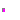
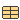

| Name | Description |
|---|---|
| BooleanVectorInput | Vector of Boolean inputs |
| IntegerVectorInput | Vector of Integer inputs |
| RealVectorInput | Vector of Real inputs |
| PartialBooleanSISO | Partial block with a BooleanInput and a BooleanOutput signal |
| PartialIntegerSISO | Partial block with a IntegerInput and an IntegerOutput signal |
| PartialRealSISO | Partial block with a RealInput and an RealOutput signal |
| Partial block with a BooleanVectorInput and a BooleanOutput signal | |
| PartialIntegerMISO | Partial block with an IntegerVectorInput and an IntegerOutput signal |
| PartialRealMISO | Partial block with a RealVectorInput and a RealOutput signal |
|  PartialTriggeredSet | Partial block to evaluate expression that is associated with the first input trigger signal (optionally with guard) |
|  ActiveSetIntegerRecord | Record to define a "active, integer" pair, to associate an integer with an active flag |
Connector with one input signal of type Boolean.
Extends from Boolean.Connector with one input signal of type Boolean.
Extends from Integer.Connector with one input signal of type Boolean.
Extends from Real.
| Name | Description |
|---|---|
| y | |
| u |
| Name | Description |
|---|---|
| y | |
| u |
| Name | Description |
|---|---|
| y | |
| u |
| Name | Description |
|---|---|
| u[nu] | |
| y |
| Name | Description |
|---|---|
| u[nu] | |
| y |
| Name | Description |
|---|---|
| Advanced | |
| precision | Number of significant digits to be shown in dynamic diagram layer for y |
| Name | Description |
|---|---|
| u[nu] | |
| y |
| Name | Description |
|---|---|
| Select exactly one check box | |
| rising | =true, if rising input triggers evaluation |
| changing | =true, if changing input triggers evaluation |
| falling | =true, if falling input triggers evaluation |
| active | =true, if active input at sample times triggers evaluation |
| Other options | |
| use_guard | = true, if guard enabled |
| guard | y not changing, if guard=false (time varying) |
| samplePeriod | Sample period if active=true (only temporarily) [s] |
| Name | Description |
|---|---|
| active | Active flag |
| expr | y = if active then expr else y_default (time varying) |